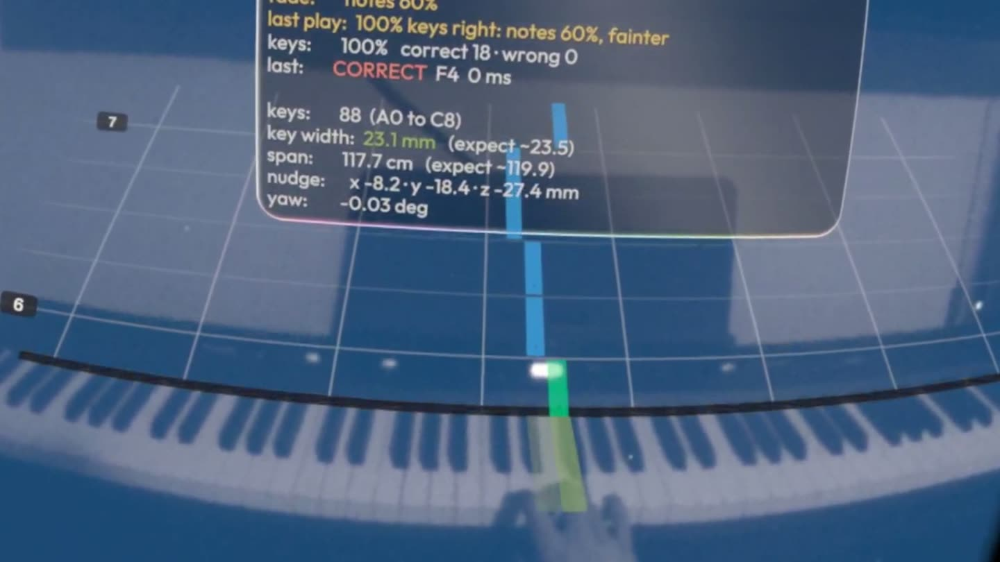

Wrong notes
Play D when the song wants D♯ and the key you pressed flashes coral. It stays a dim coral while you hold it, never green, so it can't pass for right.
Played DWanted D♯
I'm a junior in Georgia. I make mixed-reality apps and websites, mostly about things I'm learning. Right now I'm building PianoGlass, a piano trainer for the Meta Quest 3.
Piano lessons cost $40 to $80 an hour, so most practice happens alone, with nobody there to say which note was wrong.
PianoGlass puts falling notes onto a real piano through the Quest 3's passthrough cameras. The keyboard plugs into the headset over USB, so the app knows every key you press. It flags a wrong note the moment you play it, times every note to the millisecond, and tells you which bar to practice next.

I tested every build on my own piano. These are seven of them, from the first week to mid-November.



September through November 7 were filmed on a Quest 2. The blue tint was a passthrough bug I fixed later. November 14 and onward is filmed through the Quest 3 lens with my phone.
Working copies of four parts of the app, in its own colors. The practice controls are live.
Play D when the song wants D♯ and the key you pressed flashes coral. It stays a dim coral while you hold it, never green, so it can't pass for right.
Every note is judged like a rhythm game: Perfect within 40 ms, Great within 80, Good within 150. You see how early or late you were.
After each run, the results card colors every bar by its worst note and offers to loop the weakest one.
Pick a hand, set the tempo from 25% to 200%, and turn on the metronome, wait mode or memory fade.
Both hands · Tempo 100%
PianoGlass is entered in the Technology Enhances the Arts category. The question is whether an app that listens to what a beginner plays and corrects them in real time helps them learn a passage more accurately than a standard falling-notes app. Next is a study with five beginner pianists.
Once a month I write about the piano: where it came from, how it works and how people learn to play it. The end of each issue is about what I changed in PianoGlass that month.
The name comes from the app. After a song it tells you which bar to work on, like "Bar 9 needs work."
A lot of my class assignments end up as websites. These five are live.

AP Physics 1 · November 2026
A 3D model of our group's water balloon slingshot, before and after we added an angle pin. Change the angle, pullback and band stiffness, then fire 20 shots from each to compare accuracy.

AP Lang · team of four · November 2026
A virtual museum about the right to mental health: a lobby, five galleries and an exit room with resources. I built the site and curated the gallery on social media.

Algebra II capstone · May 2026
Game theory through the algebra behind it, from a penalty kick to a Prisoner's Dilemma you can play round by round.

English · February 2026
Tradition and change in Achebe's novel, told through quotes, characters and symbols.

English · February 2026
Connects The Other Wes Moore to real data on Atlanta, the US and the world, with steps you can take.
A Python version of the AP CS A Picture Lab, built on plain numpy arrays so students see how an image is stored before they start on machine learning. It has a pixel-grid inspector, a desktop app, tests, and a neural network project where you pick a dataset and a network structure and defend each choice.
Finds every person in an image with a pre-trained YOLOv8 model, draws a box and confidence label on each one, and writes the total on the picture.
Loads a webpage, splits it into chunks and has a Llama 3 model running locally through Ollama write a short summary, five bullet points and one takeaway.